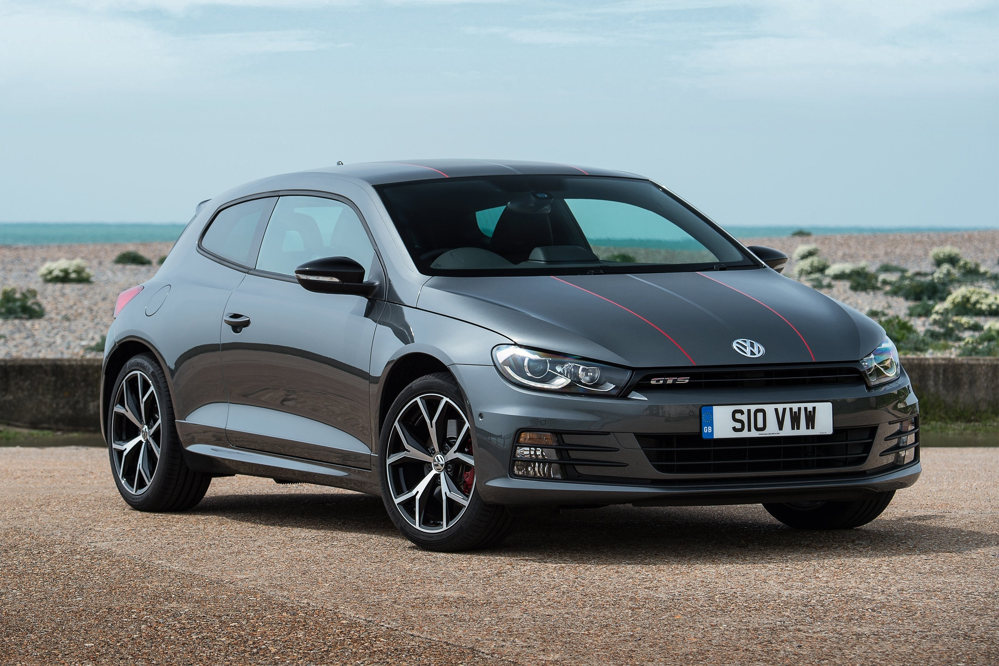
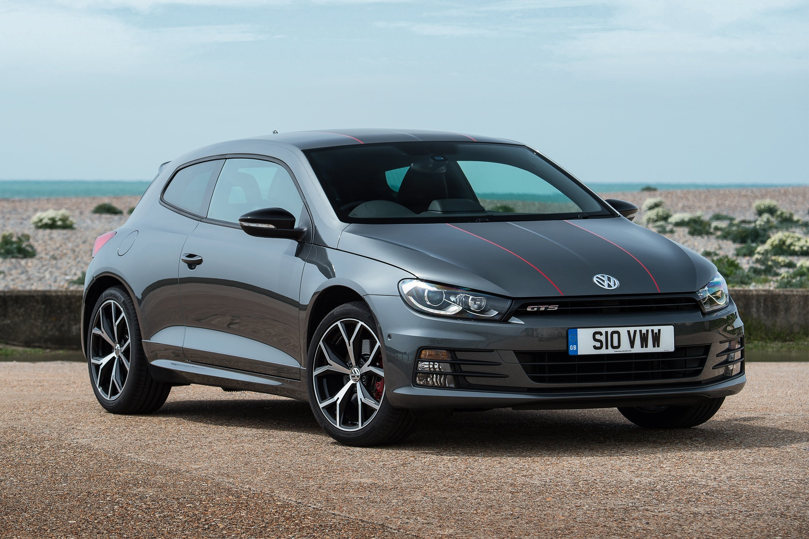

| De ce tip este caroseria, Volkswagen Scirocco III? |
Coupe, 3 Uşi, 4 scaune |
| Care este consumul de combustibil, Volkswagen Scirocco III? |
8.1 l/100 km extra-urban
12.35 km/l urban
|
| Cât de rapidă este mașina,Volkswagen Scirocco III? |
250 km/h | 155.34 mph
0-100 km/h: 6 sec
0-60 mph: 5.7 sec
|
| Care este puterea motorului,Volkswagen Scirocco III? |
265 CP, 350 Nm |
| Care este volumul motorului, Volkswagen Scirocco III? |
2.0 l
1984 cm3
|
| Câți cilindri are motorul, Volkswagen Scirocco III? |
4, in linie |
| Care este sistemul de transmisie, Volkswagen Scirocco III? |
Tracţiunea față. |
| Care este lungimea vehiculului, Volkswagen Scirocco III? |
4248 mm |
| Care este lățimea vehiculului, Volkswagen Scirocco III? |
1820 mm |
| Care este greutatea vehiculului, Volkswagen Scirocco III? |
1344 kg |
| Care este masa maximă admisă, Volkswagen Scirocco III? |
1770 kg |
| Cât de mult spațiu portbagaj, Volkswagen Scirocco III? |
312 - 1006 l |
|
Câte transmisii are cutia, Ce tip este cutia de viteze, Volkswagen
Scirocco III?
|
6, cutie manuală |
 
